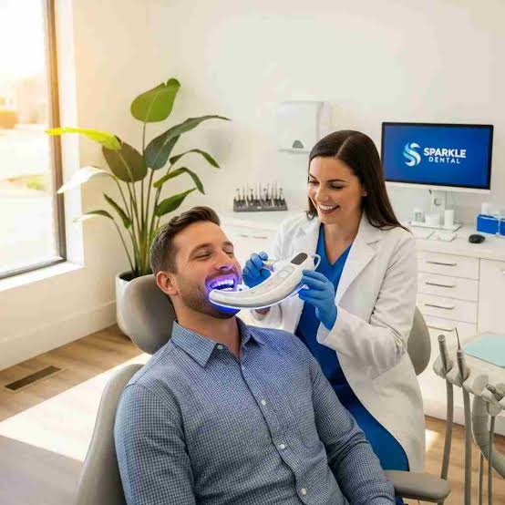

Routine Dental Cleaning
Professional removal of plaque and tartar from accessible tooth surfaces to support oral hygiene.
Book a CleaningHelp keep your teeth and gums healthy with professional dental cleaning and personalized oral hygiene guidance from the SmileCare Dental Clinic team.


Daily brushing and cleaning between your teeth are essential, but plaque can build up in areas that are difficult to reach. Professional dental cleaning helps remove plaque and hardened deposits called tartar.
During your visit, the dental team can assess your oral hygiene, discuss your gum health and recommend a cleaning schedule suited to your individual needs.
Your cleaning visit can be tailored to your oral health. Our team can help you understand which preventive care options may be appropriate for you.
Professional removal of plaque and tartar from accessible tooth surfaces to support oral hygiene.
Book a CleaningAn assessment can help identify signs of gum inflammation and determine whether further care is needed.
Ask About Gum CareProfessional cleaning may reduce certain external stains caused by foods, drinks or tobacco.
Discuss Your OptionsLearn brushing and interdental cleaning techniques that fit your teeth, gums and daily routine.
Get Oral Care AdviceProfessional cleaning is an important part of preventive dental care. Your dentist can recommend how often you need visits based on your gum health, plaque buildup and individual risk factors.
Removing plaque and tartar can support better gum health.
Cleaning removes deposits and some surface stains.
Get advice on brushing, flossing and future dental visits.
Understanding the process can help you feel more comfortable before your dental appointment.
The dental team reviews your teeth, gums and oral health concerns before cleaning.
Deposits are removed using suitable professional cleaning instruments.
Polishing may be offered to remove selected surface stains and smooth tooth surfaces.
Receive guidance on home care and when to schedule your next visit.
Brush twice a day with fluoride toothpaste, clean between your teeth daily, limit frequent sugary snacks and drinks, and follow your dentist's advice. If you have persistent bleeding, swelling or pain, arrange a dental assessment.
Schedule a visit with SmileCare Dental Clinic and get personalized guidance for maintaining healthy teeth and gums.
Book Your Appointment